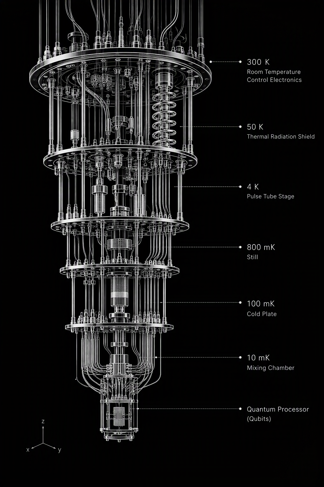
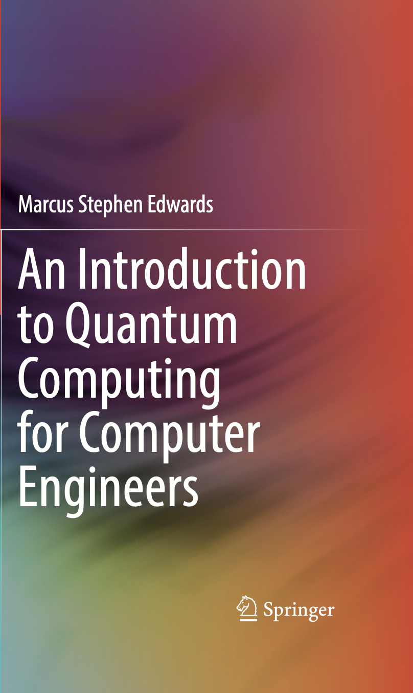
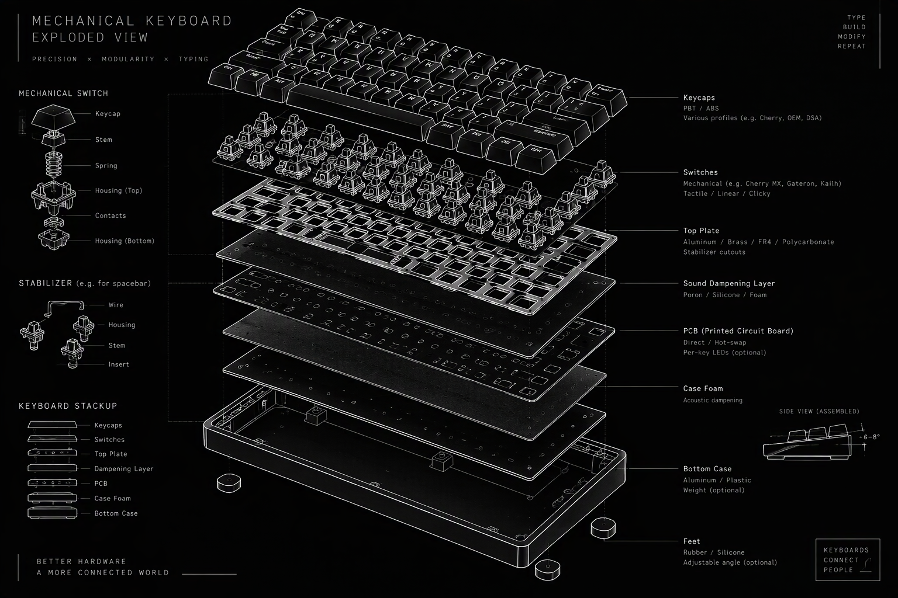

September 2026 – Present
University of Portsmouth · Portsmouth, United Kingdom
Doctor of Philosophy
Computing
Building quantum hardware, quantum software and scalable computing systems across the technology stack.
Explore projects Research archive My Recent Reading

This book focuses on practical topics in quantum computing that will give a student or practitioner of computer engineering a foundational understanding of quantum computer engineering. The reader should know enough by the end of the book to work effectively with quantum computers in a lab or industry setting, at any layer of the stack.
Explore the book at Springer ↗A multidisciplinary practice spanning quantum information, semiconductor devices, compilers and developer tooling.
Citations
Publications
Technology patents
Technology companies founded
I completed a Masters in Quantum Information Science through the Institute for Quantum Computing at the University of Waterloo in 2020. After stints as a quantum software engineer at Photonic Inc, and a quantum hardware researcher in the Quantum Science and Technology Lab, I am now a software developer at Xanadu Quantum Technologies and a part-time PhD student at the University of Portsmouth. To hear me describe my interests in quantum computing research and technology, listen to the episode of the Practical AI podcast below!
Academic study and visiting research in computing, physics and quantum information science.
Computing
Computing
Physics
Electrical and Computer Engineering
Physics – Quantum Information Science
Computer Science and Physics
Scholarships and academic awards received throughout my studies.
Selected software, hardware and research projects spanning the quantum-computing stack.
Web experiences spanning nonprofit fundraising, personal finance, quantum computing and event networking.

The Quantum Emulation Engine frontend built with React and Material UI included colourful, interactive interface including forms and graphs, as well as an authentication workflow and interactive code editor which was hooked up to the hybrid quantum cloud backend.
The “emulation engine” is a full stack engineering project made freely available on GitHub. The engine includes tools for the design, simulation, visualization and testing of quantum algorithms. The engine is comprised of a React and Material UI based web user interface including programming and visualization tools, a web API for programmatically performing quantum experiments through web integrations, an expressive open source Python library for the construction and execution of quantum algorithms, an event-driven high-performance distributed simulation environment written in Mozilla’s low-level Rust programming language and Python, and a TensorFlow based simulator that allows experiments to be performed on Google’s Tensor Processing Units.

The Leadme web application was built with Laravel and jQuery. It worked in tandem with the Leadme wearable hardware and mobile app to provide a complete online experience to tradeshow exhibitors and attendees.
The Leadme web app was a full-featured Laravel web application, a social media platform similar to Linkedin with chat and editable pages where users could keep up with their connections and sales leads, integration with HubSpot and in-app analytics, editable company pages with embedded custom HTML, forms, videos which would appear in the iPad app on the tradeshow floor. Automated emails were also customizable in the admin portal. The entire site's styles could be chosen to match subscribing company's themes.

The Awake Deborah website was designed and developed using Squarespace. The site has a minimalistic design, clean sans-serif fonts and uses large images to fill space.

Cents provided in-app financial campaign summaries and visualizations. With a YNAB integration, Cents also helped to visualize the impact on your money that a campaign had.

A simple static website created free of charge for Verona High in Kampala, Uganda to help with their fundraiser for kids' school supplies.
Mobile and web applications built for lead management, personal finance, social networking and secure password storage.
Based on JQuery, Bootstrap and Laravel, the Leadme app enables sales people to view and manage their marketing lead profiles, manage team members, goals and have access to in-depth analytics.
The Leadme mobile app was built on Apache Cordova for Android with help from the Cordova Contacts Plugin, Cordova Pebblekit Plugin and JGrowl.

A Post-CSS and React Native based mobile password keeper that allows users to generate and manage passwords and passphrases, securely. The app provides lightning-fast online and offline functionality.

Yata2Yata was developed for iOS and Android using Facebook's React Native. The back-end is based on Google's Firebase. The Facebook-integrated app was made available on both Google Play and Apple's App Store.

Cents is a Laravel-based web application that provides online transactions through an integration with Stripe. The application adds a streamlined usability on top of Stripe’s transaction technology and adds support for group payment scenarios.

Selected publications, conference presentations, articles and patents across quantum engineering, computing and materials science.

Hands-on robotics projects spanning custom processors, embedded control, CNC mechanisms and battlebots.
K-9 has a plywood chassis based on the BBC’s schematics of the K-9 robot from Doctor Who. An H-bridge controlled geared motor system provides K-9 with mobility, while an embedded Raspberry Pi manages the entire system.
K-9 uses espeak text-to-voice to explain the math problems he solves and say funny things. A homemade CNC machine, built from two floppy drives and a CD drive, writes out the solutions. It is controlled by three easyDriver stepper motor drivers and an Arduino Uno running Grbl.


The i.fluf was the first component of K-9. To learn how to design and create an intelligent robot from scratch, I began by building a unique nibble-sized central processing unit from digital primitives in DIP IC packages. It was designed to be accessible: viewers could see it working with the naked eye and deduce what it was doing.

I set out to build a robot to keep me company. Its chassis uses OSEPP’s mechanical tank robotics kit, with a Raspberry Pi 1 Model B, Arduino Uno, Adafruit Motor Control Shield V2 and four 4N35 optical isolators.

Jaeger is the battlebot my sister and I built for the first Great Canadian Bot Brawl at the 2015 Maker Expo in Kitchener City Hall. We designed Jaeger in AutoCAD and built its chassis from plywood. An Arduino interprets PWM signals from a radio receiver and controls three drill motors through a circuit we designed using four SPDT relays.

A complete chronology across quantum software, research, teaching, startups and laboratory systems.
Selected coursework and technical skills across quantum computing, software development and hardware.
Feedback from collaborators across quantum software, financial technology and product engineering.
Quantum research, engineering collaborations and open-source projects.
msedwards@ieee.org ↗